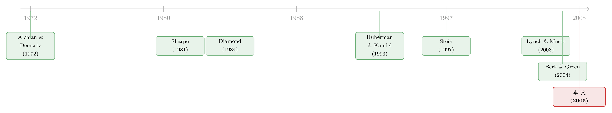

替留下的人作证：基金家族为什么非得「炒掉」几个经理
本文读的是 Gervais, Lynch & Musto (2005, Review of Financial Studies)：一位基金经理对自己「到底有没有本事」的了解，永远快于、也精于场外的投资者；这道信息落差会让未来的合约低效。一家足够大的基金家族（fund family），通过承诺解雇一部分经理，可以把留下来的人「衬托」得更可信，从而把这部分低效一点点收回——当旗下基金数量趋于无穷，损失归零，结果恰好是「有技能者留、无技能者走」的第一最优。
1 一个绕不开的「多余」中间人
先问一个看似无聊、实则别扭的问题：你买基金，钱交给的到底是谁？
名义上，是一位基金经理（manager）在替你打理。可现实里，这位经理几乎从不直接为你工作——她受雇于一家像 Fidelity 这样的基金家族。于是在「投资者—经理」这层我们熟悉的委托代理之上，又凭空多出了「家族—经理」这一层。多一层代理，就多一层利益冲突、多一层信息摩擦。那么，这个中间人到底凭什么存在？
教科书的标准答案是「规模经济与范围经济」：家族能摊薄交易系统、合规、品牌的固定成本。这话不错，但 Gervais、Lynch 和 Musto 觉得它太敷衍了——规模经济解释不了为什么是家族这种组织形态，更解释不了家族在「留谁、炒谁」上的那些动作。他们想给这层多余的中间人，找一个真正属于信息经济学的存在理由。
（关于基金家族这一组织形态本身的竞争含义，可参见《当「对手」就坐在自家屋檐下：被动基金如何逼着主动基金跑得更快》。）
2 谜底的起点：经理比你更懂自己
文章的全部张力，压在一句朴素的假设上：
经理从自己的「操盘经历」里学到的关于自身技能的信息，远多于外人能从她已实现的收益里看出来的。
这非常符合直觉。一年下来，你作为投资者只能看到一个数字——基金赚了还是亏了。可经理自己知道得多得多：她为什么建这个仓、她没建哪些仓、每一笔交易的时点与规模、事后回报和她事前判断差在哪里。所以模型干脆做了个极端化处理：第一期结束时，经理就完全知道了自己有没有技能，而投资者只能看着收益去猜。
这道「学习速度的不对称」一旦成立，麻烦立刻就来了。一个靠运气赚到高收益的庸才，没有任何动机站出来说「其实我没本事」——她会装作和高手一样，被投资者继续雇用；反过来，一个因为倒霉而亏了钱的真高手，也无法令人信服地辩白，只能和那些真没本事的人一起，被扔进「不再续聘」的池子里。两种错配——留下庸才、放走高手——都在白白销毁价值。
接着，一个自然的问题是：既然经理愿意把信息更早地交给投资者（因为按 Berk-Green 的逻辑，所有盈余最终都归经理，她其实最想让投资者「看准」她），那她为什么不直接说？答案是：她说的话不可信，而且她也不能把真正值钱的私密信息（持仓、策略）公开——一公开就被市场抢跑（front-running）。她需要一个可信的代言人。
这，就是基金家族登场的地方。
3 模型：把这道落差算成一个数
这是一篇彻头彻尾的理论论文，核心机制全在一个干净的两期模型里。值得一步步拆开看。
收益与技能。 共两期 \(t=1,2\)。直接投资市场，回报等概率地取 \(+x\) 或 \(-x\)（\(x\in(0,1]\)），期望为零。把钱交给经理，收益取决于她的技能 \(\tilde a\)：有技能（\(\tilde a=\alpha\)，\(\alpha\in(0,1)\)）的概率是 \(\theta\)，没技能（\(\tilde a=0\)）的概率是 \(1-\theta\)。技能的作用，是把「赚钱」这件事的概率从 $1/2$ 抬到 \((1+\alpha)/2\)：
$$ \tilde r_t=\begin{cases}+x,&\text{prob. } \tfrac{1+\tilde a}{2}\\[2pt]-x,&\text{prob. } \tfrac{1-\tilde a}{2}\end{cases} $$
于是一个有技能的经理，单位资金的期望超额收益正好是 \(x\alpha>0\)；庸才则只能拿到零。基金的运营成本是 \(k>0\)，由投资者均摊。所以一个「有 \(p\) 的概率是高手」的经理，期望净盈余（expected surplus）是 \(Ax\alpha p-k\)。
合约。 三条关键假设：(i) 报酬只能挂钩已实现收益；(ii) 有限责任，报酬不能为负；(iii) 采用 Berk-Green (2004) 的结论——边际资金在均衡里赚不到超额收益，投资者的期望盈余为零，全部盈余被经理拿走。在「高/低」两态下，第二期合约因此只剩一个变量 \(\omega\)：收益为 \(+x\) 时付 \(\omega\)，为 \(-x\) 时付 \(0\)。
第二期的雇佣与定价（Lemma 1）。 若投资者认定经理有技能的概率是 \(p\)，则她被雇用当且仅当期望盈余非负：
$$ p\ \geq\ \frac{k}{Ax\alpha},\qquad \omega(p)\ \equiv\ \frac{2\,(Ax\alpha p-k)}{1+\alpha p}. $$
直觉很顺：\(p\) 越大，被雇用的把握越大、拿到高收益的概率越高、报酬 \(\omega(p)\) 也越高。
投资者怎么更新（Lemma 2）。 看到第一期收益后，用贝叶斯法则把先验 \(\theta\) 更新成：
$$ \theta_{+x}=\frac{(1+\alpha)\theta}{1+\alpha\theta},\qquad \theta_{-x}=\frac{(1-\alpha)\theta}{1-\alpha\theta}. $$
显然 \(\theta_{+x}>\theta>\theta_{-x}\)：好收益抬升口碑、坏收益拖累口碑。因为 \(\theta\) 本就高到足以雇用，好收益后的经理一定被留用；而 \(\theta_{-x}\) 可能掉到雇用门槛 \(k/(Ax\alpha)\) 之下——那位「倒霉的高手」就此被错杀。
损失到底有多大（Proposition 1）。 把第一最优（投资者和经理一样快地知道技能，只在 \(\tilde a=\alpha\) 时雇用，期望报酬 \(\theta(Ax\alpha-k)\)）减去两类错配的损失，就得到经理在期初能预期到的第二期报酬 \(\Pi_0\)。当坏收益足以让经理被弃用（\(\theta_{-x} 如果坏收益后经理仍被雇用（\(\theta_{-x}\geq k/(Ax\alpha)\)），则只剩「留庸才」一种错配，两个走运/倒霉的庸才（\(+x\) 和 \(-x\) 后都被留）各亏 \(k\)： $$
\Pi_0=\theta(Ax\alpha-k)-(1-\theta)k.
$$ 无论哪种情形，\(\Pi_0\) 都严格小于第一最优 \(\theta(Ax\alpha-k)\)。这块被信息落差吃掉的盈余，正是基金家族可以去抢救的东西。 然后，把经理放进家族里。家族能观察到经理私下学到的技能——这是它的信息优势。但麻烦在于：家族的激励和经理一模一样，它也巴不得投资者相信「我手下个个是高手」。所以家族说的话，凭什么比经理本人更可信？ 这里是全文最漂亮的一步。设想两位经理本期都表现糟糕。如果她们各自单干，投资者只会从坏收益推断「不值得再投」，双双出局——哪怕其中一位只是运气差。可一旦她们同属一个家族，家族就能主动炒掉其中一个。 妙就妙在：这次解雇几乎是免费的——反正投资者本来也不会再投那位被炒的经理。但它却给留下来的那位提供了有价值的信息。因为家族在「留谁」上是有偏好的：它当然更想留下那位有技能、只是倒了霉的，而不是真庸才——留前者，未来能赚更多。于是投资者虽然看不到留任者的真实技能，却能推断：她大概率比那个被炒的人更强。 换句话说，当经理可以被家族解雇时，投资者更新对经理技能的判断，就不再只靠她过去的收益，还能靠家族的留任决定。这恰恰能让「有技能却倒霉」的高手被重新雇用，把第 3 节里那块被销毁的盈余救回来。 但真正决定成败的，是规模。一家只有一只基金的家族做不到这件事——它没有「别人」可以拿来当垫背、当对照，承诺解雇也就不可信。两只基金时，家族可以炒一留一，价值开始被救回。而随着基金数 \(N\) 增大，type-1（留庸才）和 type-2（炒高手）两类错误都能被压小：家族事前承诺——在给定第一期收益的条件下，解雇「预期中那一比例」的无技能者。当 \(N\to\infty\)，大数定律让「事前承诺的比例」和「事后真实的无技能比例」之间的人均偏差趋于零。于是反转出现：在极限上，被炒的恰好就是无技能者，第一最优盈余被完全收回——只不过这份收益，经理得和家族分。 这就是论文的核心论断，也是它对那个老谜题的回答：基金家族之所以存在，不（只）是为了省成本，而是因为「把一群经理捆在一起」这件事本身，让可信的监督第一次成为可能。一个孤立的经理无法替自己作证；只有当家族愿意、且可信地牺牲掉一部分人，留下的人才被「衬托」得可信。炒人，是说真话的代价。 这个机制天生是不完美的（除极限外）。这并不意外——Diamond (1984) 早就指出，把监督委托给一个自利的第三方，会带来它自己的代理问题。本文真正的贡献，是说明把「监督者的池化（pooling）」这套思路搬到资产管理业，会长出一个有趣的新结论：被池化进家族的经理，能被更可信、更高效地监督，因而能更赚钱。 值得停下来辨认几个「近邻」，因为本文的机制和它们形似而神不同。 它像 Gertner-Scharfstein-Stein (1994) 与 Stein (1997) 笔下的内部资本市场：总部事后挑出各事业部里的赢家和输家，使事前融资更便宜。家族干的是类似的活——只不过它分配的不是资源，而是「谁能留在伞下」。 它也像 Alchian-Demsetz (1972) 那个分享团队利润、能观察每个成员、还能开除成员的监督者。但驱动力截然相反：在 Alchian-Demsetz 里，因为单个成员的产出无法被单独观察，组队才产生了搭便车问题，监督是用来减少它的；而本文里努力无成本、根本没有搭便车——是组队本身，才让监督成为可能。 它还像锦标赛（tournament）文献：Malcomson (1984) 里固定比例的员工被晋升，本文里固定比例的经理被留用。但目的不同——企业里的锦标赛是为了激励员工出力，而家族里这场隐性的「能力锦标赛」，是为了让投资者的资本配置更有效率。（这种把经理们放在一起相对评比、进而影响其行为的逻辑，亦可对照《「赌一把」未必是加杠杆：当落后的基金经理反手减仓》。） 把这条线索捋直，能看清本文站在哪。 最早，是 Bhattacharya & Pfleiderer (1985)、Starks (1987)、Kihlstrom (1988) 等人开启的委托资产管理研究，关注投资者与经理之间的道德风险与信息不对称。随后一支转向学习与信号：Huberman & Kandel (1993)、Huddart (1999) 让风险厌恶的经理事前已知技能、用激进的持仓来「自证」；Heinkel & Stoughton (1994)、Farnsworth (2001) 进一步加入道德风险，发现基准（benchmark）成了合约的关键；Holmström (1999) 则在多期里刻画了努力的动态。它们有个共同点——经理能通过早期的选择去操纵投资者学到什么。本文刻意把这些渠道关掉，只为孤立出家族的信息角色。  另一条线是委托监督：Diamond (1984)、Krasa & Villamil (1992) 证明，把被监督者池化能提升委托监督的效率。本文正是把这套思路移植到了资产管理业。再加上 Sharpe (1981)、Barry & Starks (1984)、Pichler (2002) 关于「同时雇用多位经理」的好处，以及 Berk & Green (2004) 那条「盈余归经理」的均衡逻辑，本文得以把整套故事算成一个干净的两期模型。它和 Lynch & Musto (2003) 共享「从过去收益中学习」的设定，区别在于：本文允许经理比投资者学得更多。而在实证那头，Khorana & Servaes (1999)、Massa (2003)、Nanda-Wang-Zheng (2004) 都在研究家族，却都最终落回规模与范围经济——本文则给出了一个可被检验、且能与「规模经济」区分开的全新预测。 (a) 几个可能的疑问 Q：这跟「规模经济」到底有什么不同？凭什么说家族不是为了省成本？ 规模经济预测的是成本随基金数下降，与「留谁炒谁」无关。本文的预测完全不同：家族的解雇/留任决策本身携带信息，且监督效率随旗下基金数 \(N\) 单调上升、在极限收敛到第一最优。这是一个关于人事决定的信息含量的可检验命题，规模经济讲不出来。 Q：为什么家族「承诺解雇固定比例」是可信的，而经理本人的话不可信？ 关键在「免费且自利地一致」。被炒的经理反正也不会被投资者续投，所以解雇的直接成本很低；而家族在留任时真心偏好留下高手（未来赚更多），这个偏好和投资者的利益方向一致。于是「炒掉最差的」不是空话，而是家族事后会真正去做的事——可信正来源于此。 Q：既然经理愿意更早暴露信息，为什么不干脆全部公开？ 因为真正值钱的是持仓与策略，一公开就被抢跑（front-running），价值瞬间蒸发。经理只能把敏感信息透露给和她绑在一起、被严密监督的董事/家族，而不能直给投资者。家族是一个安全的信息中转站。 Q：投资者的盈余为零，那这套机制救回来的价值归了谁？对投资者有意义吗？ 按 Berk-Green 设定，盈余全归经理（和分享的家族），投资者始终只拿正常回报。但社会总盈余确实增加了——资本被配置给了真正有技能的人。福利改善是真实的，只是分配上投资者不直接得益。这是模型的一个边界假设，也是它最该被追问的地方。 Q：极限结果（\(N\to\infty\) 恢复第一最优）是不是太理想化？ 是。它依赖大数定律把「事前承诺比例」和「事后真实比例」对齐。在有限 \(N\) 下机制是不完美的，且现实中技能并非一期就完全可知、解雇也并非零成本。极限结果更像一个基准，告诉你机制的方向和上限，而非对大型家族的字面描述。 Q：那这是不是反过来暗示，大家族一定比小家族「更会监督」？ 模型的比较静态确实指向「\(N\) 越大、监督越可信高效」。但这忽略了大家族可能滋生的新代理问题（如把资源向明星基金倾斜、季末拉抬净值等）。实证上能否看到「家族越大、解雇决策的信息含量越高」，恰恰是本文留给后人的活儿。 (b) 几个可能的研究问题与提案 1. 把「解雇即信号」搬到数据里检验。
【经济故事】本文最锋利的可检验预测是：家族解雇一位经理，会抬升同家族留任经理被投资者认定的技能，从而带来资金流入。这与规模经济故事正交。
【可行性】中。用 Morningstar/CRSP 基金数据库识别家族内经理离职事件，做事件研究，看同家族「幸存」基金的资金流与费率变化。难点是把「被炒」与「主动跳槽/退休」区分开——需要结合 SEC 文件与新闻文本，识别策略不易干净。 2. 家族规模 \(N\) 与解雇决策的信息含量。
【经济故事】模型预测监督质量随 \(N\) 上升。那么大家族的经理更替，是否对留任者的后续业绩/资金流有更强的预测力？
【可行性】中高。数据现成（家族层面基金数、经理更替、后续 alpha）。可用家族规模分组或交互项检验「更替信息含量 × \(N\)」。识别上要小心：大家族的经理本身可能就更同质，需要控制经理与策略固定效应。 3. 把这套「委托监督」逻辑移植到公司债/信用市场的资管。
【经济故事】信用类基金经理的「技能」（择券、违约预判）同样是经理私知、投资者难辨的。债券基金家族是否也通过留任/解雇来「替留下的人作证」？且信用市场的流动性冲击会放大错配成本，机制可能更强。
【可行性】中。可用债券基金的持仓数据（如 Lipper/Morningstar 固收基金）与经理更替，复刻提案 1 的检验。挑战在于债基业绩的归因更难，需要剥离久期/信用利差暴露。（流动性放大错配这条线，与《基金越难脱手，它手里的债券越「抖」》的脆弱性视角天然互补。） 4. 家族「说真话」与「拉抬同事」之间的张力。
【经济故事】本文说家族炒人是为了可信地传递信息；但另一支文献（组合拉抬、明星策略）说家族会为了营销而扭曲信息。同一家族里，监督激励与营销激励何时占上风？
【可行性】中。理论上可在本文框架里加入营销/资金流外部性，看均衡何时偏离「诚实解雇」。实证上可对照季末拉抬强的家族是否解雇决策的信息含量更低。（可呼应《「关门谢客」的基金，到底是好管家，还是会说漂亮话的人？》。） 这是一篇「问题选得好、模型做得干净」的理论论文。它的真正贡献，不在于复杂的技术，而在于一句话就能说清、却此前没人说清的洞见：基金家族存在的信息经济学理由，是让可信的监督成为可能——而可信，来自于愿意且能够牺牲掉一部分人。 把 Diamond 的委托监督、内部资本市场的「挑赢家」、以及锦标赛的「固定比例」三条线索拧成一股，落在资产管理这个具体场景上，是漂亮的综合。 对它的保留，主要有两点。其一，核心假设的极端化：经理一期之内就「完全」知道自己的技能，且家族能「完整」观察到——现实里学习是渐进、嘈杂、且可被操纵的，放松这些假设后，那个干净的极限结果还剩多少，并不清楚。其二，福利分配的尴尬：盈余全归经理与家族、投资者始终拿零，使得「这套机制对谁好」在直觉上有点别扭；它增进的是总效率，而非投资者福利。 我最想看到的后续，是有人把这套「解雇即信号」的预测真正拉进数据——尤其在公司债与信用基金这种「技能更隐蔽、错配更昂贵」的市场里。如果家族的解雇决策确实能预测留任者的后续表现与资金流，且这种预测力随家族规模上升，那这篇 2005 年的理论，就不再只是一个优雅的模型，而是一条被验证过的、关于资管业为何长成今天这副模样的因果机制。4 真正关键的一步：用「炒人」换「可信」
5 它像谁、又不像谁
6 文献脉络
评论与延伸（Q&A + 研究方向）
我的判断
参考文献